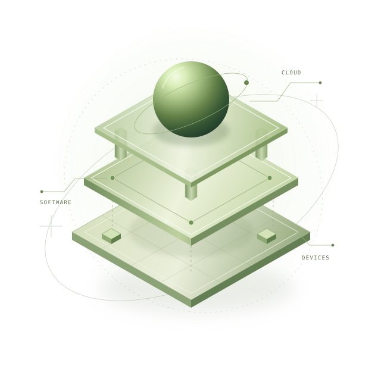

Infraestructura como código, segmentación de red y hardening de Linux. Una exploración de seguridad por capas.
BUSCANDO PRÁCTICAS
PREPROFESIONALESLIMA, PERÚ
HOLA, SOY ITALO RAMOS
Ideas claras.Sistemasconectados.
Entre el software, la nube y el mundo físico.
Estudio
Ingeniería Informática en la PUCP y exploro cómo construir
sistemas seguros y bien pensados.
+EXPLORACIÓN 001 / SISTEMAS+

TODO ESTÁ CONECTADOInfraestructura con la seguridad desde el diseño.
01 / DETRÁS DEL CÓDIGO
ITALO MIJAIL
RAMOS DIAZ
RAMOS DIAZ
ir.+
LIMA, PERÚEST. INGENIERÍA
INFORMÁTICA / PUCP
INFORMÁTICA / PUCP
Curiosidad como
punto de partida.
Soy Italo, estudiante de 9.º ciclo de Ingeniería Informática en la Pontificia Universidad Católica del Perú.
Me interesa el espacio donde se encuentran la arquitectura de software, la infraestructura cloud y la seguridad. Quiero orientar mi carrera hacia cloud security y sistemas IoT, construyendo una base técnica a través de proyectos y colaboración.
Hoy participo en el desarrollo de TuDerecho con EQUIPU y en la elaboración de papers sobre inteligencia artificial en IEEE. Busco prácticas preprofesionales para seguir aprendiendo junto a un equipo de ingeniería.
- CICLO EN PUCP
- 9º
- INGLÉS
- Avanzado
- MI SIGUIENTE PASO
- Prácticas
02 / TRABAJO SELECCIONADO
Del concepto
al código.
Proyectos para entender cómo se conectan
las piezas. Y qué pasa cuando algo falla.
Microservicios para gestionar un catálogo de impresoras 3D y sus órdenes de impresión, con gateway y descubrimiento de servicios.
Motor de transferencias que explora consistencia transaccional, idempotencia y contabilidad de doble partida.
LEGALTECH · DESARROLLO EN EQUIPO
TuDerecho
Participo como desarrollador en una plataforma que conecta clientes y abogados, y facilita propuestas entre profesionales.
03 / LO QUE ME MUEVE
No solo cómo
funciona.
Cómo se conecta.
Mi interés está en la arquitectura: las decisiones que hacen que un sistema pueda crecer, desplegarse y mantenerse seguro.
01
Arquitectura & cloud
Servicios, límites y comunicación. Entender las decisiones detrás de una infraestructura.
02
DevOps & DevSecOps
Acercar desarrollo y operación, con automatización, CI/CD y seguridad durante el proceso.
03
IoT & ciberseguridad
Explorar la conexión entre dispositivos, datos y cloud, pensando en sus riesgos desde el inicio.
HERRAMIENTAS PRESENTES EN MIS PROYECTOS
APRENDER HACIENDO ↗LENGUAJES
- Python
- Java
- Bash
FRAMEWORKS & DATOS
- Spring Boot
- FastAPI
- PostgreSQL
CLOUD & HERRAMIENTAS
- AWS
- Terraform
- Docker
- Git / GitHub
EN EXPLORACIÓN
- CI/CD
- DevSecOps
- IoT
- Azure
04 / EXPERIENCIA & FORMACIÓN
Aprendizaje
en movimiento.
Mi recorrido combina formación universitaria, desarrollo colaborativo e investigación.
-
Ingeniería Informática
Pontificia Universidad Católica del Perú
Formación universitaria y proyectos de ingeniería para conectar fundamentos con decisiones de diseño.
-
TuDerecho
EQUIPU · Desarrollador
Participación en una plataforma para la interacción entre clientes y abogados, y la colaboración entre abogados mediante propuestas.
-
Inteligencia artificial
IEEE · Elaboración de papers
Participación en la preparación de artículos asociados a IA, como parte de mi experiencia extracurricular.
05 / LA PRÓXIMA CONEXIÓN
ABIERTO A OPORTUNIDADES DE PRÁCTICAS
Las buenas ideas
empiezan con un hola.
¿Tu equipo trabaja en cloud, arquitectura o seguridad?
Me
gustaría conocerlo.